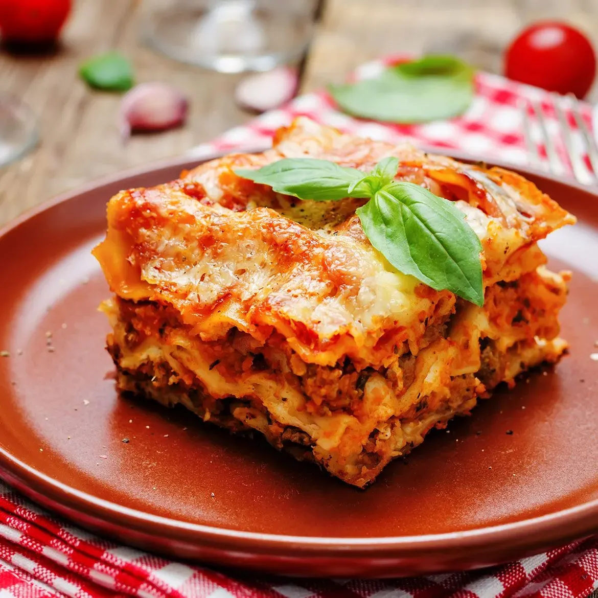
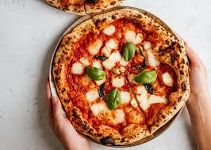
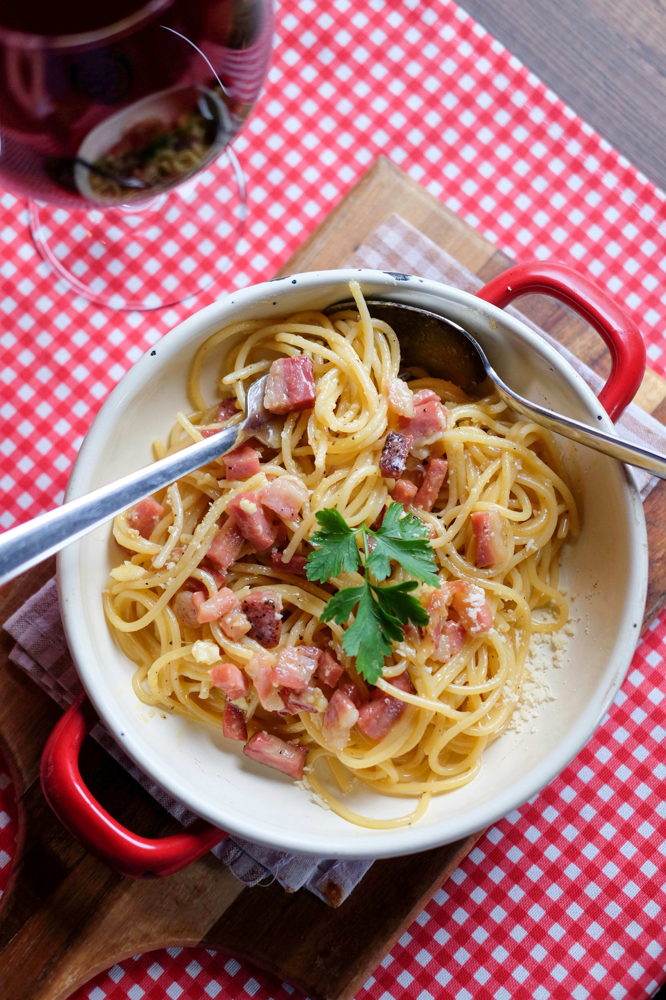
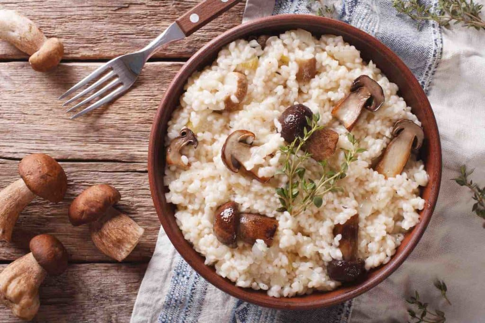
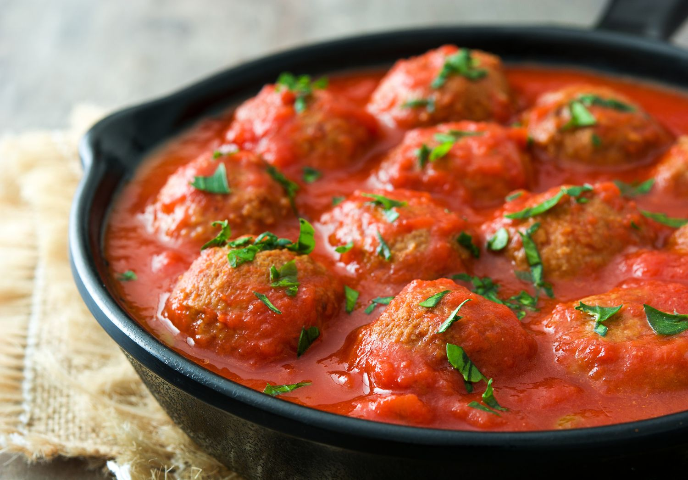
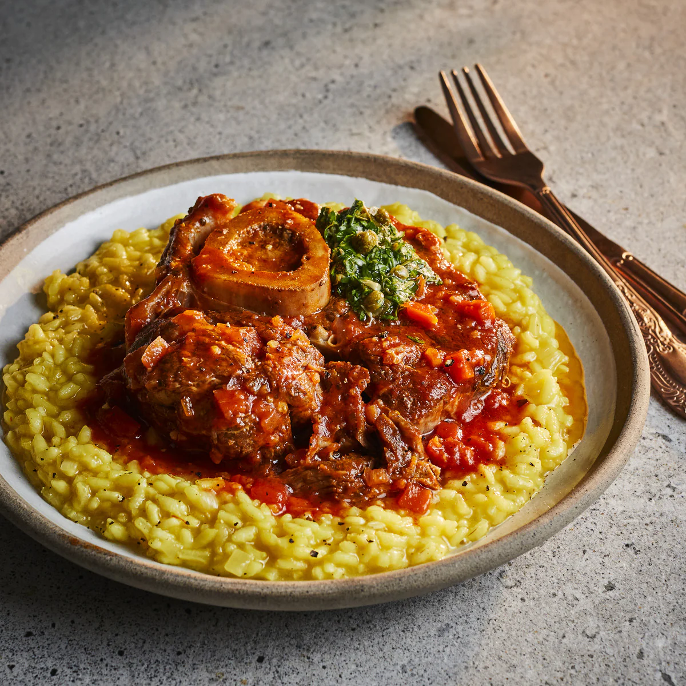
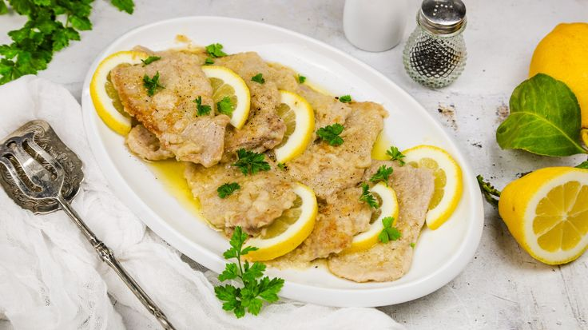

LA RECETTE DE LA SEMAINE
Melanzane alla Parmigiana (Gratin d’aubergines à l’italienne)
Un grand classique della nonna à base d’aubergines fondantes, de sauce tomate parfumée et de mozzarella gratinée. Un plat généreux et réconfortant, parfait pour un repas familial.
TOP RECETTES
Lasagne alla Bolognese
Des couches de pâte fraîche, un ragù longuement mijoté, une béchamel onctueuse et du parmesan doré… le plat familial par excellence, comme Nonna le servait le dimanche.
Pizza Margherita
Pâte fine maison, sauce tomate parfumée, mozzarella fondante et basilic frais. Simple, belle, délicieuse — la reine des pizzas napolitaines.
Spaghetti alla Carbonara
Pas de crème ici ! Juste des œufs, du pecorino, du poivre et du guanciale croustillant. Une recette romaine authentique, prête en quelques minutes mais pleine de caractère.
Risotto ai Funghi
Un risotto crémeux aux champignons de saison, relevé avec du parmesan et une touche de vin blanc. Parfait pour les soirées fraîches avec un bon verre de vin
Polpette al Sugo
Boulettes moelleuses à base de viande, mijotées dans une sauce tomate parfumée. Servies avec des pâtes ou du pain… elles font fondre petits et grands.
Osso buco alla milanese
Jarret de veau mijoté longuement avec vin blanc, bouillon, légumes, souvent accompagné de gremolata (zeste de citron, ail et persil).
Scaloppine al Limone
De fines tranches de veau nappées d’une sauce citronnée légère et parfumée. Un plat rapide et raffiné, souvent accompagné de légumes ou de purée.
Tiramisù Classico

Le dessert italien incontournable : biscuits imbibés de café, crème mascarpone, cacao amer… une douceur aérienne à chaque bouchée, impossible d’y résister
Présentation
La cucina della nonna est née d'un souvenir : celui d’une cuisine italienne où régnait l’odeur du basilic, du ragù mijoté et des gâteaux sortis du four. Chaque dimanche, Nonna Maria régalait toute la famille avec ses plats simples, faits avec amour et transmis par le cœur, jamais par écrit.
Pour ne pas laisser ces trésors se perdre, ses petits-enfants ont créé ce site, une sorte de carnet vivant, pour partager avec le monde ces recettes d’antan, pleines de chaleur, d’histoire et de tradition. Ici, pas de cuisine compliquée : seulement de vrais plats italiens, comme à la maison, comme chez Nonna. Parce qu’au fond, cuisiner, c’est transmettre — et comme disait toujours Nonna : “L’amour, ça se met dans la sauce.”